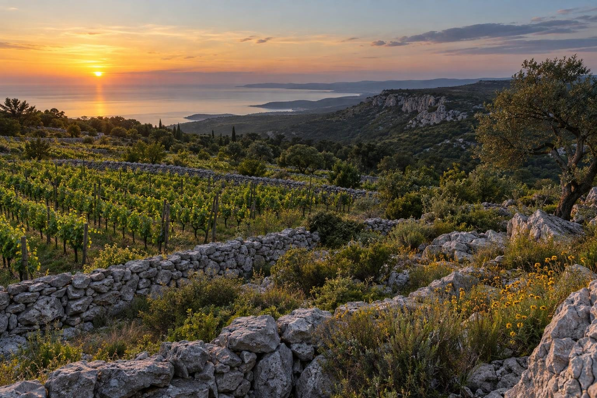
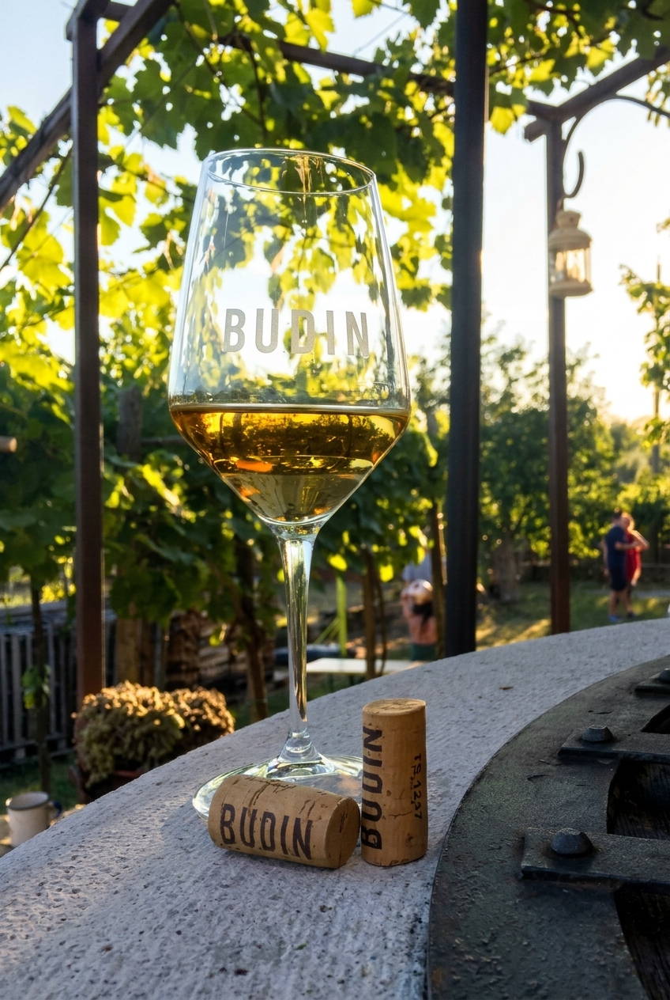

Degustare
Conoscere i vini là dove nascono, tra la sala panoramica e la cantina nella roccia.

Sales · Carso triestino
Vini del Carso, ospitalità e sapori autentici in un luogo immerso nei vigneti, dove la tradizione incontra una nuova idea di accoglienza.

Radici e futuro
Nel 2015 Gregor Budin ha scelto di riprendere la tradizione vitivinicola della propria famiglia, recuperando i terreni dei nonni e riportando la vite al centro del progetto.
Leggi la nostra storiaTre modi di esserci
Un luogo solo, da vivere con il proprio ritmo.
Conoscere i vini là dove nascono, tra la sala panoramica e la cantina nella roccia.
Svegliarsi nel silenzio del Carso, con lo sguardo aperto sui vigneti di Sales.
Seguire la pietra, il vento e i sentieri di un paesaggio essenziale, vicino a Trieste.